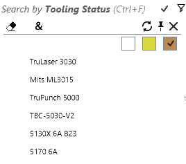
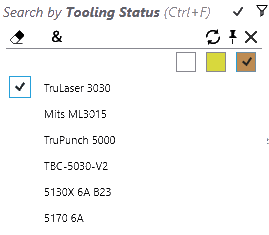
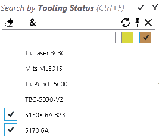

零件库过滤器
按加工状态过滤零件

选择加工状态搜索字段，按其加工状态过滤零件。下拉列表以彩色复选框显示状态，其中*白色*为
OK，橙色*为*错误，*黄色*为*警告*状态。在这种情况下，*应用全部(&)*按钮被启用，以对所有选定机床应用过滤条件。
| 过滤器 | 说明 |
|---|---|
 |
显示至少有一个加工错误的零件。 |
 |
显示*无法*使用*TruLaser 3030*机床切割的零件。 |
|
切割不可行：这些零件不能在任何切割机床上切割（注意此处“&”选择）。 |
|
折弯错误：由于没有有效的折弯加工，因此无法生产零件。 |
 |
仅限翻板折弯：这些零件可以加工，因为存在有效的翻板折弯模具。这些零件不能在任何折弯机上加工。 |


按折弯装备过滤零件

选择*折弯装备*字段，按折弯装备搜索零件。
-
此字段的下拉列表显示折弯模具列表。选择一个模具，以查找使用此模具的零件列表。
-
下拉列表中的模具列表可以通过键入模具名称、模具类型（上模、鹅颈、半径等）和模具说明来缩小范围。
-
选择多个模具并应用*所有(&)*修改器，以列出使用这两个模具的所有零件。
-
选择一个零件，双击打开零件详细信息以突出显示用于所有折弯机的零件的其他模具。模具说明更新显示装备详情。
-
双击机床以突出显示所选机床的所选零件使用的折弯模具。 image::bend-mount2.png[BendMounts] 将鼠标放在折弯装备过滤器按钮上，显示工具提示及所选模具图标。模具计数周围的方括号表示“全部”匹配条件，而小括号表示任何匹配。